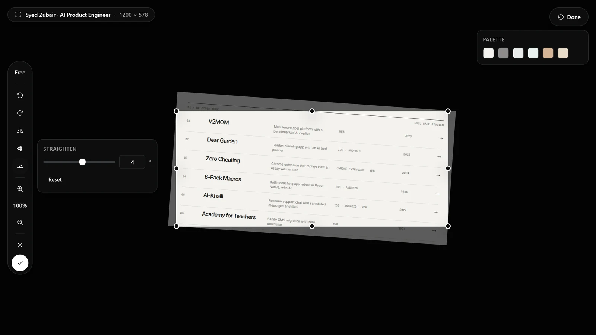

A crop box around the whole capture
Crop opens a box around the entire image. Drag an edge or corner to resize it, drag inside to move it, type an exact width and height, or hold a ratio. The arrow keys nudge it. ScrollSnapshot maps the box back to the image's source pixels, even when a tall screenshot is scaled down to fit the screen. Format changes afterward still use the cropped image.
You can also rotate or flip the capture from the same bar, and zoom in to place an edge precisely.

Straighten a tilted capture
Straighten turns the image by any angle up to 45 degrees either way, with a live preview under a grid so you can line a horizon or a table edge up with it. The crop box starts inside the tilted image, so you do not keep an empty corner.
A clean finish
- Open the finished capture and choose Crop.
- Drag the box to the part you want, or type its size. Straighten first if the image is tilted.
- Apply it, check the edges, then copy or download the result.